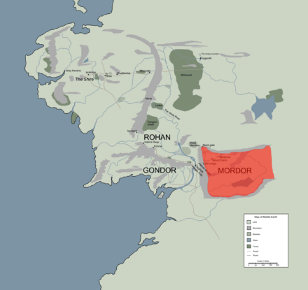
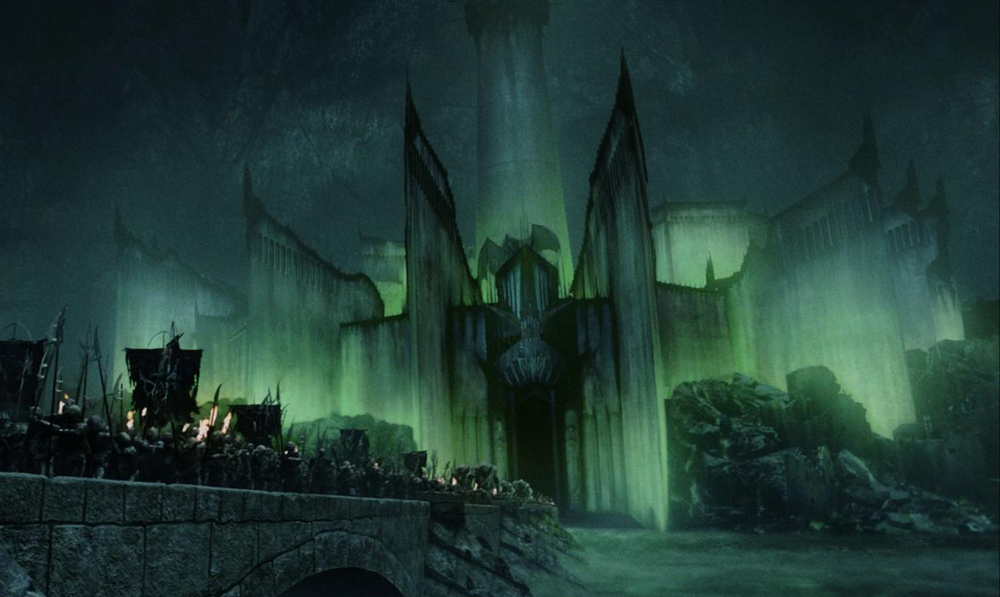
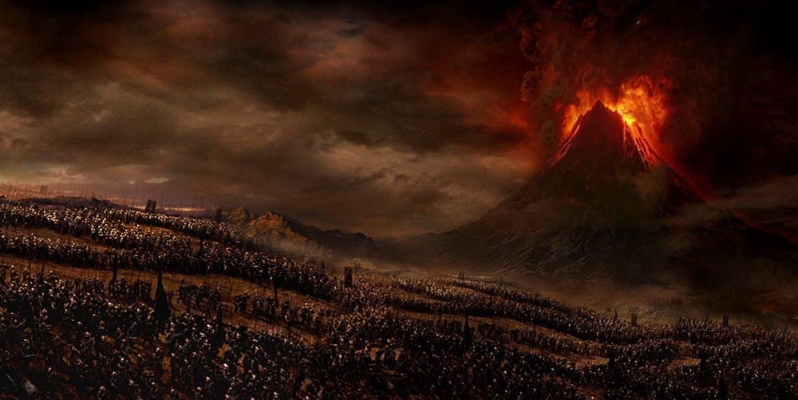

Flag
Flag is black but bearing on it in red the Evil Eye.
Map

Black, volcanic plain located in the southeast of Middle-earth to the East of Gondor, Ithilien and the great river Anduin.
History of Mordor - Sauron's last Dance
Lifespan : SA 1000 - TA 3019

War of the Ring
During the War of the Ring, Sauron gathered all his forces to Mordor. After the Battle of the Pelennor Fields, a Host of the West went to the Black Gate. Sauron sent his army to destroy the Men of Gondor and Rohan at the Battle of the Black Gate, but then Frodo Baggins destroyed the One Ring and Mordor fell. Sauron's power was destroyed, sending shock waves through the air and ground. The Dark Tower of Barad-dûr, the Black Gate and the Towers of Teeth collapsed into ruin. Mount Doom erupted and both Sauron and his Ringwraiths were apparently destroyed. The shadows dissipated and Aragorn II Elessar led a campaign to destroy the remaining Orc holds within Mordor.

Made with for LOTR Universe!